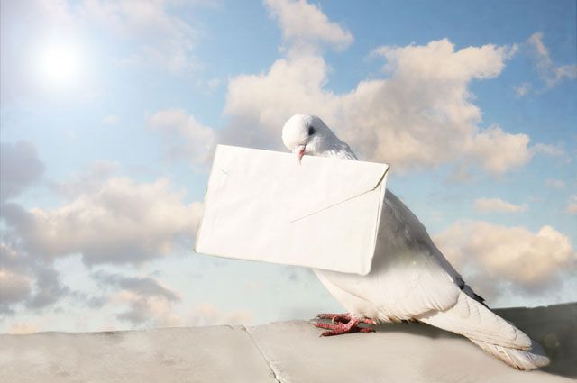

Немного о почтовых голубях
Как голуби находят путь домой?
В научной литературе способность голубей вернуться домой называют «хоумингом». Даже сегодня ученые не могут объяснить механизм, который позволяет голубям точно определить направление полета, из множества городов найти нужный, из тысяч похожих домов определить один и из сотен окон отыскать именно свое. Мозг голубя развит до такой степени, что его можно назвать природным компьютером.
Он способен обрабатывать и хранить огромные массивы информации. Собирают ее голуби, используя все свои органы чувств. Голуби обладают очень острым зрением в сочетании с прекрасной памятью. Это позволяет им формировать маршрут на основе зрительных впечатлений. Кроме того, голуби могут определять уровень магнитной напряженности. В основании клюва находится «магнитно-рецепторная система». С ее помощью только что вылупившийся птенец определяет и запоминает уровень магнитной напряженности возле своего гнезда. И эту информацию он уже никогда не забудет.
И наконец, за долгие годы жизни бок о бок с человеком птицы научились пользоваться его дорогами. Еще с древнеримских времен почтовые голуби в Италии летали из Рима на север и обратно вдоль Виа Аврелиа - старого прибрежного пути, который в 241 году до нашей эры соединил Вечный город с Галлией (нынешней Францией). Итальянские ученые обнаружили, что и современные птицы придерживаются этого маршрута. Древняя дорога стала ориентиром для тысяч поколений почтовых голубей. Каким образом они передают эту информацию своим потомкам, пока остается загадкой.